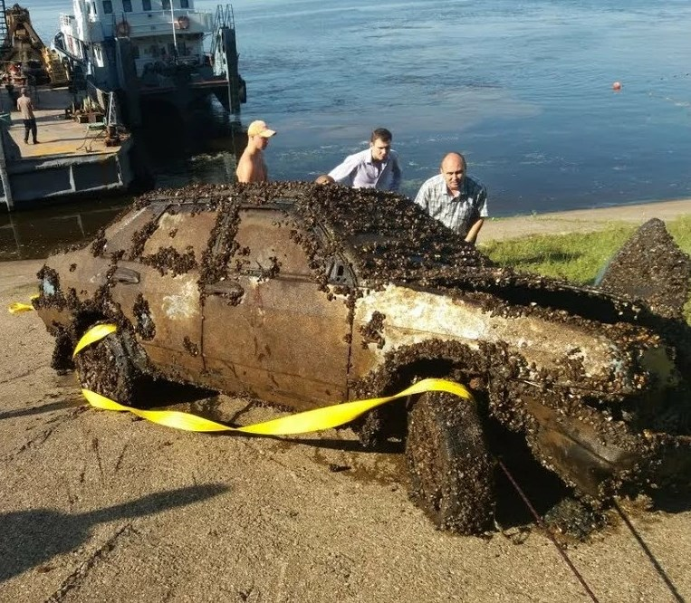

ВАЖНЫЕ НОВОСТИ | 24
На дне Волги нашли машину: когда ее открыли, люди

В Чебоксарах на дне Волги нашли автомобиль с телами мужчины и женщины. Об этом сообщает pg21.ru. По данным издания, ВАЗ-2109 находился в реке в течение 11 лет, а найденные в нем люди (25-летний молодой человек и 21-летняя девушка) все это время считались пропавшими без вести. Влюбленные пропали 7 декабря 2006 года. По предварительной информации, их автомобиль съехал с горки в воду, сорвавшись с ручного тормоза.

Портал опубликовал фотографии и видеозапись операции по подъему машины из реки. В это время на берегу находились родители молодого человека. По их словам, в течение всего это времени они «жили в ожидании» и «обращались к разным экстрасенсам и колдунам». Один из них, как заявила мать погибшего, утверждал, что ее сын «находится где-то в песчаном карьере в воде». О местонахождении автомобиля стало известно 25 июля, когда водолаз-любитель исследовал дно реки. Он сообщил о находке полицейским.